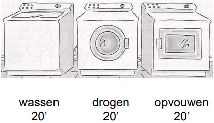
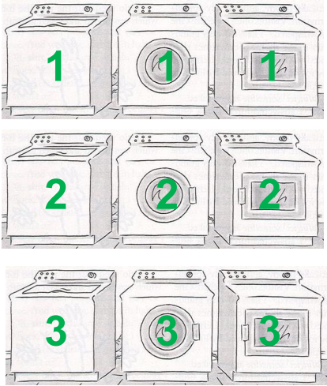
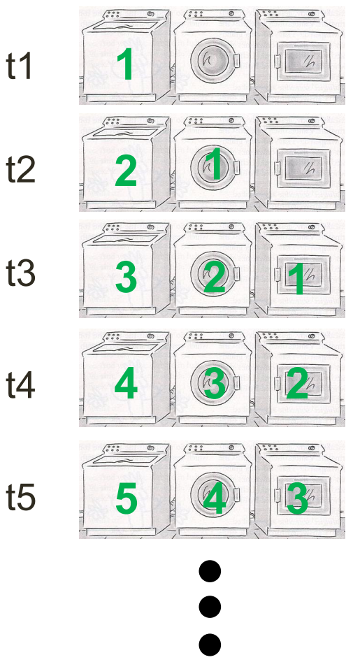
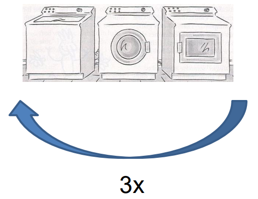
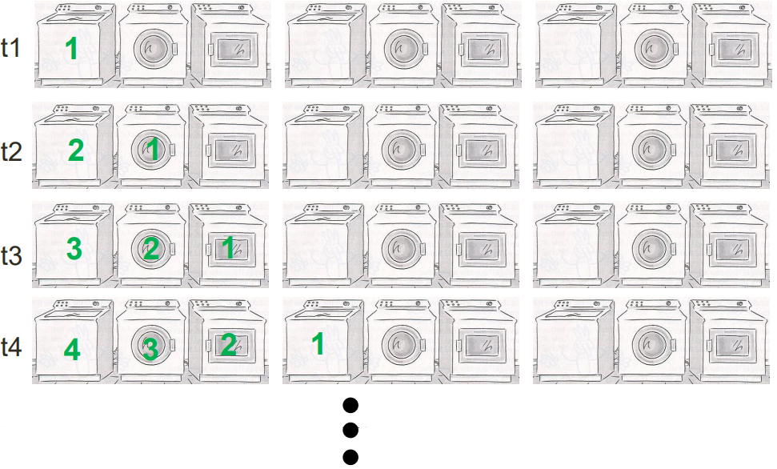
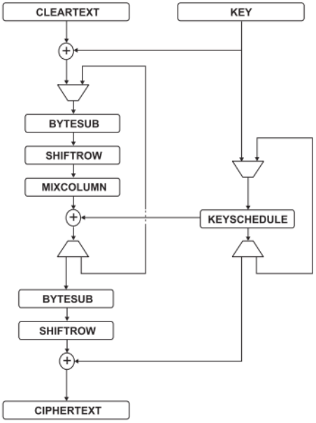
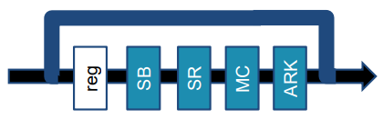
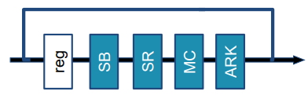
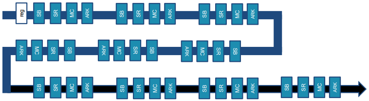
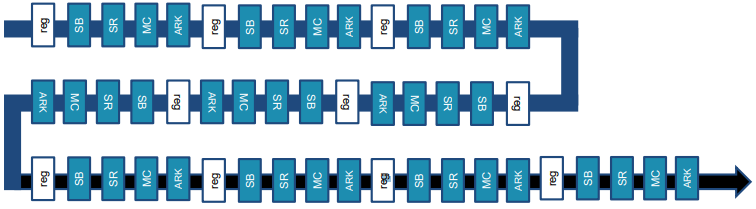

4. Ontwerpprincipes voor synchrone logica
Table of contents
- Voorbeeld ter introductie
- Ontwerpvoorbeeld: AES
Voorbeeld ter introductie
Kleren worden gewassen in 3 stappen:

1 wasmand verwerken
- Het verwerken van 1 wasmand duurt 1 uur
- Throughput = 1 wasmand/uur
- Latency per wasmand = 1 uur
3 wasmanden verwerken
- Het verwerken van 3 wasmanden duurt 3 uren als we de wasmanden 1 voor 1 volledig verwerken
- Throughput = 1 wasmand/uur
- Latency per wasmand = 1 uur
Verhogen van de throughput
Parallellisatie
- Elke machine wordt 3x voorzien
- Het verwerken van 3 wasmanden duurt 1 uur
- Throughput = 3 wasmanden/uur
- Latency per wasmand = 1 uur

Pipelining
- Throughput = 3 wasmanden/uur (na de opstartfase)
- Latency per wasmand = 1 uur

Wat als het proces meerdere keren wordt doorlopen
- Stel dat een wasmand 3 keer na mekaar het hele proces moet doorlopen.
- Dan kunnen we geen pipelining gebruiken als elke machine maar 1 keer voorzien is.

Loop unrolling
- Elke machine 3 keer voorzien + pipelining toepassen

Ontwerpvoorbeeld: AES
Animatie

Loop architectuur
AES: 1 klokcyclus per ronde (parallelle verwerking van 128 bits):
- Throughput = T
- Oppervlakte = A

AES: 16 klokcycli per ronde (verwerking byte-per-byte):
- Throughput ≈ T/16
- Oppervlakte > A/16

Loop unrolling
Loop unrolling zonder pipelining: throughput = T, oppervlakte ≈ 10 * A

Loop unrolling met pipelining: throughput ≈ 10 * T, oppervlakte ≈ 10 * A

{kind=link}
{kind=link}
{kind=link}
{kind=link}
{kind=link}
{kind=link}
{kind=link}
{kind=link}
{kind=link}
{kind=link}